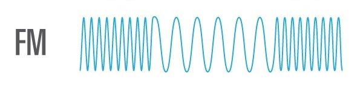

Ondas FM
Las ondas FM (Frecuencia Modulada) son un tipo de onda utilizadas en redes y comunicaciones para transmitir información mediante la variación de la frecuencia de una onda portadora de alta frecuencia. A diferencia de las ondas AM (Amplitud Modulada), donde la información se "esconde" en la amplitud de la onda, en las FM la información se codifica en las variaciones de la frecuencia de la portadora.
